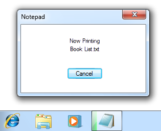
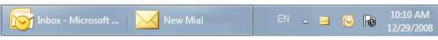
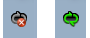
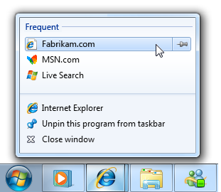
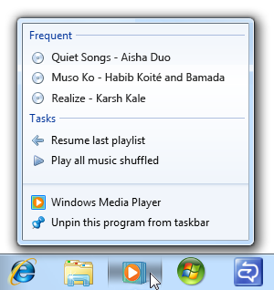

[!NOTE] This design guide was created for Windows 7 and has not been updated for newer versions of Windows. Much of the guidance still applies in principle, but the presentation and examples do not reflect our current design guidance.
The taskbar is the access point for programs displayed on the desktop. With the new Windows 7 taskbar features, users can give commands, access resources, and view program status directly from the taskbar.
The taskbar is the access point for programs displayed on the desktop, even if the program is minimized. Such programs are said to have desktop presence. With the taskbar, users can view the open primary windows and certain secondary windows on the desktop, and can quickly switch between them.
The Microsoft Windows taskbar.
The controls on the taskbar are referred to as taskbar buttons. When a program creates a primary window (or a secondary window with certain characteristics), Windows adds a taskbar button for that window and removes it when that window closes.
Programs designed for Windows 7 can take advantage of these new taskbar button features:
Technically, the taskbar spans the entire bar from the Start button to the notification area; more commonly, however, the taskbar refers only to the area containing the taskbar buttons. For multiple monitor configurations, only one monitor has a taskbar, and that monitor is the default monitor.
Note: Guidelines related to desktop, notification area, and window management are presented in separate articles.
Programs designed for Windows 7 can take advantage of these taskbar button features. Ask yourself the following key questions to determine whether or not to use them:
Jump Lists
Do users often need to start new tasks using your program? If so, consider providing a Jump List. While Jump Lists can be used for other purposes, most scenarios involve starting a new task.
Do users often need to access recently or frequently used files, folders, links, or other resources? If so, consider providing a Jump List to access these useful resources.
In this example, Windows Internet Explorer uses a Jump List to present frequently visited pages.
Do users often need quick access to a small number of your program's commands while using other programs, even if your program isn't running? If so, consider providing a Jump List with these frequently used commands. These commands must work even if your program isn't running, and must apply to the entire program, not a specific window. As an alternative, consider providing a thumbnail toolbar for commands that apply to a specific window.

In this example, the Sticky Notes accessory allows users to create a new note quickly while using other programs.
Are you promoting new, single use, or hard to find features? If so, don't use Jump Lists because they aren't intended for this purpose. Instead, improve the discoverability of such commands directly in the program.
Thumbnail toolbars
Do all of the following conditions apply?
Do the commands apply to a specific window? Thumbnail toolbars are for commands that apply to existing tasks, whereas Jump List commands are for starting new tasks.
Do users need to interact with a running task quickly while using other programs? If so, thumbnail toolbars are a good choice. Thumbnail toolbars can present a maximum of seven commands, but a maximum of five commands is generally preferred.
Are the commands immediate? That is, do they not require additional input? Thumbnail toolbars need to have immediate commands to be efficient, whereas Jump Lists work better with commands that require additional input.
Incorrect:

Commands that require additional input don't work well on thumbnail toolbars.
Are the commands direct? That is, can users interact with them using a single click? Toolbars need to have direct commands to be efficient.
Are the commands well represented by icons? Thumbnail toolbar commands are presented using icons not text labels, whereas Jump List commands are represented by text labels.
Incorrect:
In this example, the command isn't well represented by icons.
Overlay icons
Is the status useful and relevant while using other programs? If not, display the information in the program's status bars or other program status area.
In this example, the status bar is used because the status isn't useful when using other programs.
Is the status showing progress? If so, use a taskbar button progress bar instead.
Is the status critical? Is immediate action required? If so, display the information in a way that demands attention and cannot be easily ignored, such as a dialog box.
Progress bars
Is the progress feedback useful and relevant while using other programs? That is, are users likely to monitor the progress while using other programs, and change their behavior as a result? Such useful and relevant status is usually displayed using a modeless progress dialog box or a dedicated progress page, but not with a busy pointer, activity indicator, or progress bar on a status bar. If the status isn't useful when using other programs, just display the progress feedback directly in the program itself.
Correct:

Incorrect:

In the incorrect example, the taskbar button progress bar isn't very useful.
Is the task continuous? If the task never completes, there's no need to show its progress. Examples of continuous tasks include antivirus scans that aren't initiated by users, and file indexing.
Incorrect:

In this example, a continuous task doesn't need to show progress.
Sub-window taskbars
Jump Lists and thumbnail toolbars help users access resources and perform commands more efficiently. However, when designing how your program supports these features, don't take improved efficiency for granted. If users can't accurately predict which feature has the command they need, or they have to check multiple places, eventually users will become frustrated and stop using these features.
Jump Lists and thumbnail toolbars work together most effectively when they are:
Be sure to do user research to make sure you've got it right. If you ultimately find that you can't design Jump Lists and thumbnail toolbars together that achieve these goals, consider providing only one of them. It's better to have one predictable way to give commands than two confusing ones.
Make the following window types appear on the taskbar (for Windows 7, by using a taskbar button thumbnail):
For Windows 7, use taskbar button thumbnails to group the following window types with the primary window taskbar button it was launched from. Each program (specifically, each program perceived as a separate program) should have a single taskbar button.
Correct:

In this example, a secondary window is grouped with its primary window's taskbar button.
Incorrect:
In this example, Control Panel is incorrectly grouped with Windows Explorer. Users perceive these as separate programs.
Incorrect:

In this example, Windows Backup incorrectly uses two taskbar buttons for a single program.
Restoring a primary window should also restore all its secondary windows, even if those secondary windows have their own taskbar buttons. When restoring, place secondary windows on top of the primary window.
For Windows 7, programs that normally have desktop presence may temporarily display a taskbar button to show status. Do so only if your program is normally displayed on the desktop and users frequently interact with it. A program that normally runs without desktop presence should use its notification area icon instead, even though it might not always be visible.
Incorrect:

In this example, Windows Sync Center incorrectly uses a temporary taskbar button to display status. It should use its notification area icon instead.
Design your program icon to look great on the taskbar. Ensure it is meaningful, and reflects its function and your brand. Make it distinct, make it special, and ensure it renders well in all icon sizes. Spend the time necessary to get it right. Follow the Aero-style icon guidelines.
If your program uses overlay icons, design your program's base icon to handle overlays well. Overlay icons are displayed in the lower right corner, so design the icon so that area can be obscured.

In this example, the program's taskbar button icon doesn't have important information in the lower right area.
Don't use overlays in your program's base icon, whether your program uses overlay icons or not. Using an overlay in the base icon will be confusing because users will have to figure out that it's not communicating status.
Incorrect:

In this example, the program's base icon looks like it is showing status.
For general icon guidelines and examples, see Icons.
Use overlay icons to indicate useful and relevant status only. Consider the display of an overlay icon to be a potential interruption of the user's work, so the status change must be important enough to merit a potential interruption.
Incorrect:

In these examples, the overlay icon isn't important enough to merit a potential interruption.
Use overlay icons for temporary status. The overlay icons lose their value if displayed constantly, so normal program status should not show an icon. Remove the overlay icon when the icon:
Exception: Your program can constantly display an overlay icon if users always need to know its status.

In this example, Windows Live Messenger always displays an overlay icon so that users can always check their reported presence.
Don't display an icon to indicate that a problem has been solved. Instead, simply remove any previous icon indicating a problem. Assume that users normally expect your program to run without problems.
Display either overlay icons or notification area icons, but never both. Your program may support both mechanisms for backward compatibility, but if your program displays status using overlay icons, it shouldn't also use notification area icons for status.
Incorrect:

In this example, the new mail icon is displayed redundantly.
Don't flash the taskbar button to draw attention to a status change. Doing so would be too distracting. Let users discover overlay icons on their own.
Prefer standard overlay icons to indicate status or status changes. Use these standard overlay icons:
| Overlay | Status |
|---|---|
 |
Warning |
 |
Error |
 |
Disabled/Disconnected |
 |
Blocked/Offline |
For custom overlay icons, choose an easily recognizable design. Use high-quality 16x16 pixel, full color icons. Prefer icons with distinctive outlines over square or rectangular shaped icons. Apply the other Aero-style icon guidelines as well.
Keep the design of custom overlay icons simple. Don't try to communicate complex, unfamiliar, or abstract ideas. If you can't think of a suitable custom icon, use a standard icon error or warning icon instead when appropriate. These icons can be used effectively to communicate many types of status.
Don't change status too frequently. Overlay icons shouldn't appear noisy, unstable, or demand attention. The eye is sensitive to changes in the peripheral field of vision, so status changes need to be subtle.
Don't change the icon rapidly. If underlying status is changing rapidly, have the icon reflect high-level status.
Incorrect:

In this example, the rapidly changing overlay icon demands attention.
Don't use animations. Doing so is too distracting.
Don't flash the icon. Doing so is too distracting. If an event requires immediate attention, use a dialog box instead. If the event otherwise needs attention, use a notification.
Design
Design Jump Lists to satisfy your users' goals for their everyday tasks. Consider:
Your program's purpose. Think about what users are most likely to do next. For document creation programs, users are likely to return to recently used documents. For programs that show existing content, users may want access to resources they use frequently. For other programs, users might be likely to do tasks they haven't done before, such as read new messages, watch new videos, or check their next meeting.
What users care about most. Think about why users would use the Jump List instead of other means. For example, users are more likely to care about destinations they explicitly identified as important (such as Web addresses users placed on their links bar or in Favorites, or typed in). They are less likely to care about those obtained indirectly or with little effort (such as Web addresses visited through redirection or by clicking links).
Correct:

Incorrect:

In the incorrect example, the Jump List contains many destinations that users aren't likely to care about.
Don't make destinations too granular. Making destinations too narrow and specific can result in redundancy, with several ways to go to the same place. For example, instead of listing individual Web pages, list top-level home pages instead; instead of listing songs, list albums.
Correct:

Incorrect:
In the incorrect example, listing songs in a Jump List will fill it with a single album.
Don't fill all the available Jump List slots if you don't need to. Focus Jump List content on the most useful items if your program has only three useful items, provide only three. The more items in a Jump List, the more effort required to find any specific item.

In this example, the Sticky Notes accessory provides a single Jump List command, because that's all that is needed.
Provide tooltips only when needed to help users understand Jump List items. Avoid redundant tooltips because they are an unnecessary distraction. For more tooltip guidelines, see Tooltips and Infotips.
Incorrect:

In this example, the Jump List tooltip is redundant.
Jump List features vs. program features
Grouping
Provide at least one and at most three groups. Jump List items are always grouped to label their purpose. Having more than three groups makes items harder to find.
Use standard group names when appropriate. Standard group names are familiar and easier for users to understand.
Commands are given the Tasks group name, which is assigned by Windows and therefore can't be changed.
Correct:

Incorrect:

Recent is the better group name because it is familiar, and the subtle distinction between history and recent isn't worth making.
Commands
Provide a fixed set of commands regardless of program running state, current document, or current user. The commands should apply to the entire program, not to a specific window or document. Doing so is necessary for a consistent, dependable, and convenient experience. Commands shouldn't be removed or disabled.
Exceptions: You may substitute or remove commands when:
Incorrect:

In this example, Print isn't a good Jump List command because it depends on the current document.
Correct:

In this example, Sign in and Sign out are mutually exclusive commands. Also, separators are used to group related commands.
Use the following standard command labels when appropriate. Standard command labels are easier for users to understand.
Present the commands in a logical order. Common orders include by frequency of use or order of use. Place highly related commands next to each other. Within the Tasks group, put separators between groups of related commands as needed.
Don't provide commands for opening or closing the program. These commands are built into all Jump Lists.
Command icons
Within the Tasks group, provide a command icon only when it helps users understand, recognize, or differentiate commands, especially when there is an established icon for the command used within the program.
Incorrect:

In this example, Internet Explorer should provide icons for all commands to avoid an awkward appearance.
Destinations
Provide a dynamic set of destinations that are specific to the current user, but independent of the program running state or current document. As mentioned previously, make sure they fit your program's purpose, are what users care about the most, and have the right level of specificity.
When suitable, use an "automatic" destination list. Automatic destinations are managed by Windows, but your program controls the specific destinations that are passed on.
Consider using Recent for document creation programs where users are likely to return to recently used destinations.
In this example, Windows Notepad uses Recent destinations.
Consider using Frequent for programs that show existing content, where users are likely to return to items that they use often. Frequent destinations are sorted in order of frequency, most frequent first.

In this example, Windows Explorer uses Frequent destinations.
Use Frequent if Recent would result in many useless destinations. Frequent lists are more stable, and the better choice when users go to many different destinations, but aren't likely to return to rarely used ones.
Incorrect:
Using Recent in Windows Internet Explorer would result in many useless destinations.
If Recent or Frequent are equally suitable choices, use Recent because that approach is easier for users to understand and is more predictable.
If using Recent, and the program has an equivalent in the File menu, make the lists have the same contents in the same order. To users, these should appear to be the same lists.
When necessary, use a custom destination list. Your program has complete control over a custom destination list's contents and sort order, and therefore can base the list on any factors.
Create custom versions of Recent or Frequent if those are suitable, but the automatic management doesn't work well for your program. For example, your program may need to track a variety of factors beyond open file commands. In this case, use the same name (Recent or Frequent) and sort order because users won't be aware of the difference.
Otherwise, use a different type of destination to better satisfy your user's goals. Often, these lists help users perform tasks that they haven't done before, such as read new messages, watch new videos, or check their next meeting.

In this example, Windows Media Center lists the recently recorded shows that the user hasn't seen yet.
Choose a sort order that corresponds to the user's mental model of the list. For example, a to-do style list would have the next thing to do listed first. If there is no clear mental model, sort the destination list in alphabetical order.
Don't use multiple destination lists that give different views of the same data. Rather, multiple destination lists should have mostly different data to support difference scenarios. For example, you can provide a Recent list or a Frequent list, but not both. Doing so is wasteful if overlapping items are present, but confusing if overlapping items are removed.
Incorrect:

In this example, providing different views of the same destinations is wasteful.
Correct:
In this example, the destination lists have different data for different tasks.
If your program has a command to clear data for privacy, clear the Destinations lists as well. Destination lists may contain sensitive data.
Interaction
Provide up to seven of the most important, frequently used commands that apply to the window shown in the thumbnail. Don't feel obligated to provide as many commands as you can if your program has only three important, frequently used commands, provide only three.
Incorrect:
In this example, the thumbnail toolbar has commands that aren't important.
Use commands that are direct and immediate. These commands should have an immediate effect clicking the command should not display a drop-down menu or dialog box for more input.
Incorrect:

Thumbnail toolbar commands must have an immediate effect.
Disable commands that don't apply to the current context, or that would directly result in an error. Don't hide such commands because doing so makes the toolbar presentation unstable.
Don't dismiss the thumbnail when users click a command if they are likely to review the results or immediately click another command. Remove the thumbnail for commands that indicate that the user is finished for now, such as with commands that display other windows.

In this example, clicking Next in Windows Media Player continues to display the thumbnail because users might want to give other commands.

In this example, clicking Chat in Windows Live Messenger dismisses the thumbnail because users are most likely to send a message.
Presentation
For more guidelines, see Progress Bars.
When choosing window titles, consider the title's appearance on the taskbar:
Optimize titles for display on the taskbar by concisely placing the distinguishing information first.
For modeless progress dialog boxes, first summarize the progress. Example: "66% Complete."
Avoid window titles that have awkward truncations.
Incorrect:

In this example, the truncated window title has unfortunate results.
For more command label guidelines, see Menus.
When referring to the taskbar:
Example: The New Mail taskbar button icon notifies you that a new e-mail message has arrived.